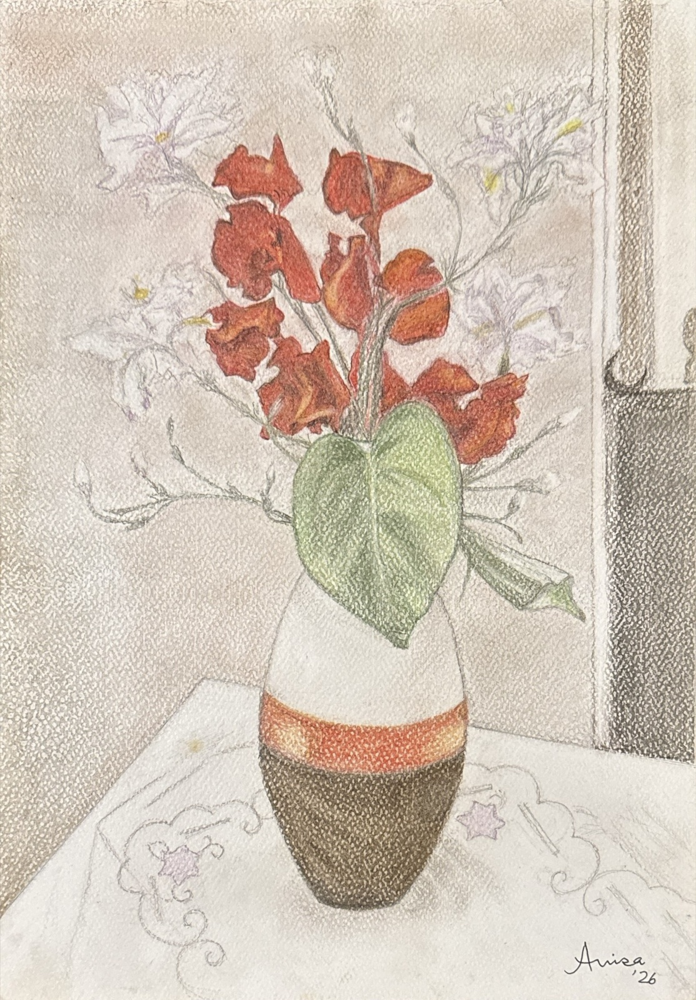

The artist
Anisa Quraishi
Anisa Quraishi is an artist based in Pakistan. Her work spans landscapes, still life, botanical studies and abstraction, with works in watercolour, pastel and mixed media.
Artelle brings these works together in one place. The catalog includes quiet studies of leaves and flowers, domestic objects, and experiments in colour and shape.